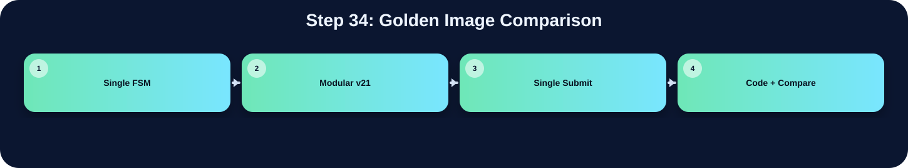

testbench 在 done 後比對輸出與 golden image。

此表把本流程在三個版本中的 state/module 與 code 關係整理出來；沒有明確對應者保持空白。
| 版本 | 對應 state / module | 和 code 的關係 |
|---|---|---|
| Single FSM | Testbench | 不在 drawBbox.v 裡，是 testbench 在 done 後比對輸出與 golden image |
| Modular v21 | Testbench | 不在 RTL 裡，由 testbench 在 done 後比對 golden image |
| Single Submit | Testbench | 不在 RTL 內，是 testbench 在 done 後比對 golden image |
此流程屬於 testbench 驗證階段，三份 RTL 檔案本身都不會真正執行 golden image comparison。它們的責任都是在內部完成影像處理與畫框，最後拉高 done；testbench 再根據 AnsSRAM 或輸出 BMP 與 golden image 進行比對。因此在本頁的三個原始程式碼區塊中，若沒有明確 testbench 程式碼，會依規則保持空白。
下方採用下拉式區塊顯示。中文說明放在程式碼上方；原始程式碼本身沒有修改、沒有插入註解。若某份檔案沒有明確對應流程，該程式碼區塊保持空白。